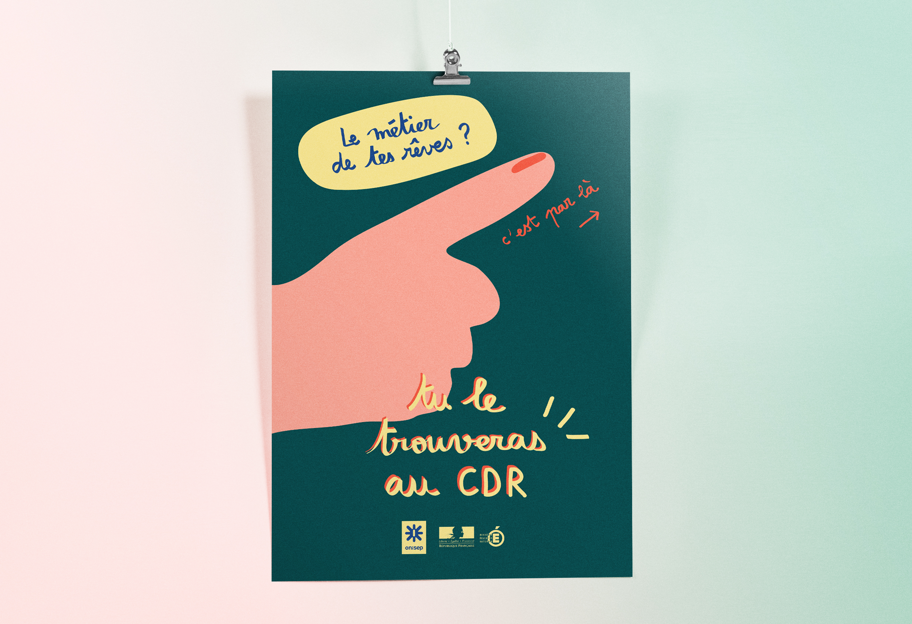
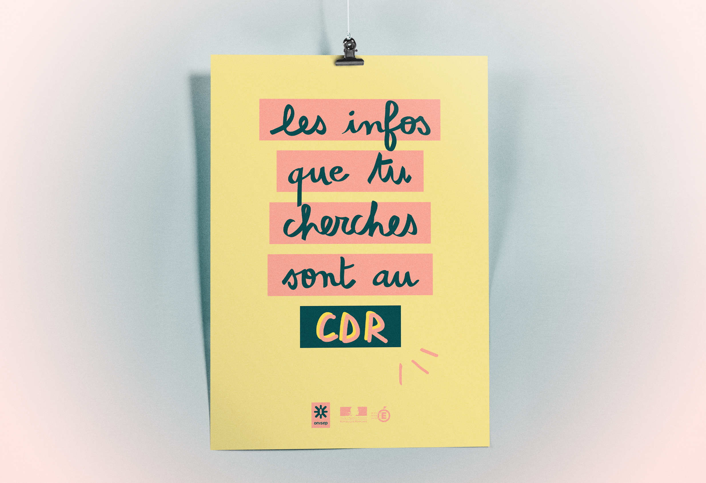
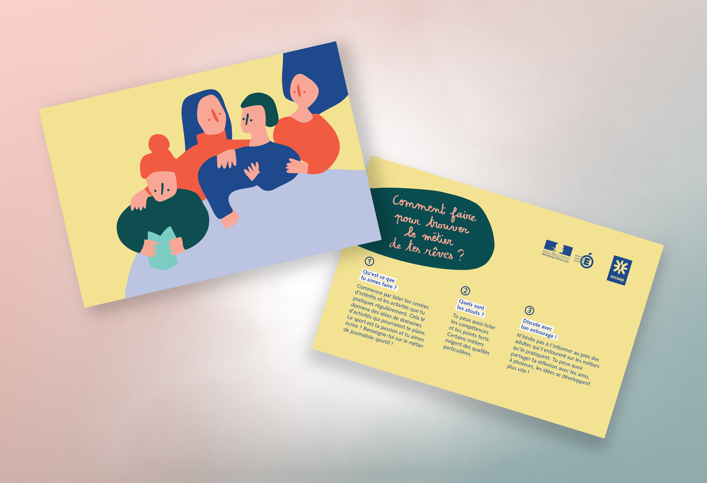
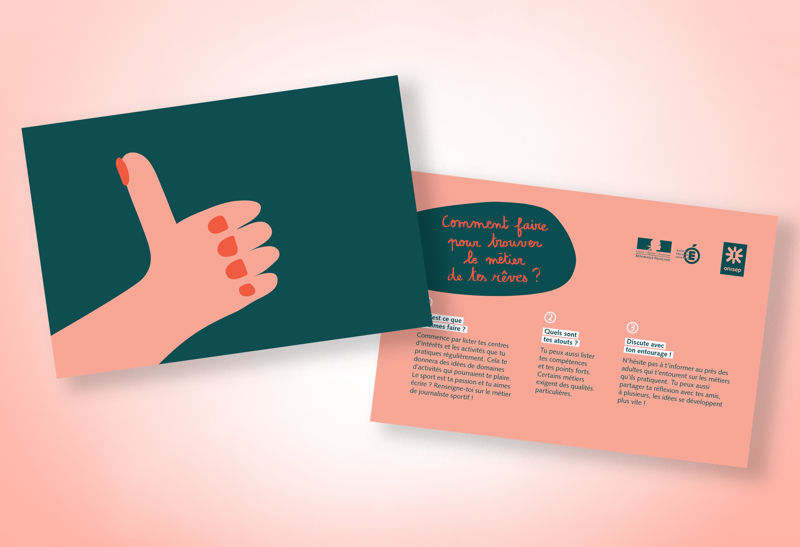

Comment trouver le métier
de ses rêves quand on est lycéen ?
Affiches invitant les lycéens à se rendre au Centre de Documentation
et de Recherche de leur établissement, lieu qui regorge d'informations
pouvant les aider
à choisir leur futur métier.
Cartes postales proposant
des conseils simples et faciles à appliquer
pour aider et encourager les lycéens à entamer des recherches d'informations
sur leur orientation.
Projet commandité par l'Onisep et le Ministère
de l'Éducation Nationale.
(projet fictif)
Juin 2018



